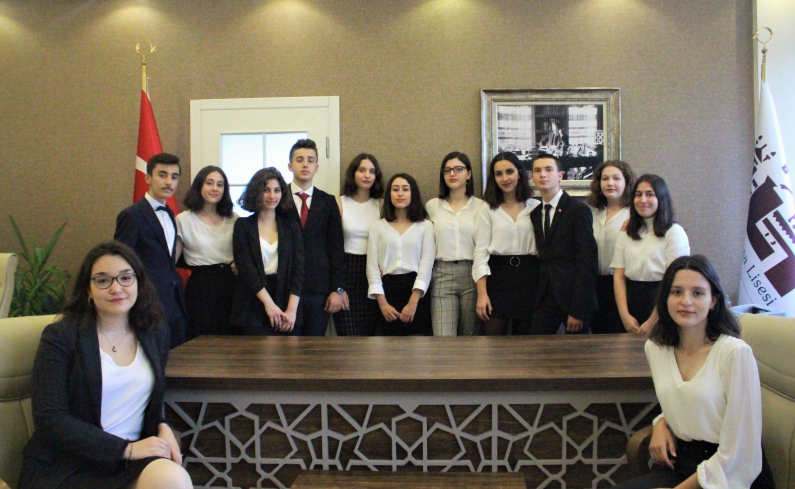

HAYDARPAŞAMUN'22 Team
Academic Team
- Secretary General: Zeynep Naz Coşkun
- Deputy Secretary General: Zeynep İrem Güner
- Head of Crisis: Taylan Tunay
- Deputy Head of Crisis: Bilge Konuksay
Organization Team
- Director General: Elif Süeda Ekinci
- Deputy Director General: Rana Ece Alper
- Deputy Director General: İrem Saygı
- Head of I.T.: Mehmet Emre Çonkar
- Head of Logistics: Nilsu Zengin
- Deputy Head of Logistics: Batuhan Yavuz
- Head of P.R.: Yenican Koçtürk
- Deputy Head of P.R.: Eftelya Kaptan
- Head of Press: İrem Kanber
- Head of Administrative Staff: Gülhan Cangöz
- Deputy Head of Administrative Staff: Zeynep Şenol
The fourth session of Haydarpaşa MUN was held between 28-31 January 2022 in Haydarpaşa High
School.
The executive team
consisted of; Secretary General Zeynep Naz Coşkun, Deputy Secretary Generals Zeynep İrem Güner,
Director General Elif Süeda Ekinci and Deputy Director Generals İrem Saygı and Rana Ece Alper.
Total number of 450 delegates
attended
10 committees which were:
- United Nations Office for the Coordination of Humanitarian Affairs
- International Labour Organization
- The United Nations Conference on Sustainable Development
- World Trade Organization
- The United Nations Educational, Scientific and Cultural Organization
- Security Council
- Joint Crisis Committee
- Historical Advisory Panel
- Alexander the Great's Cabinet
- International Court of Justice